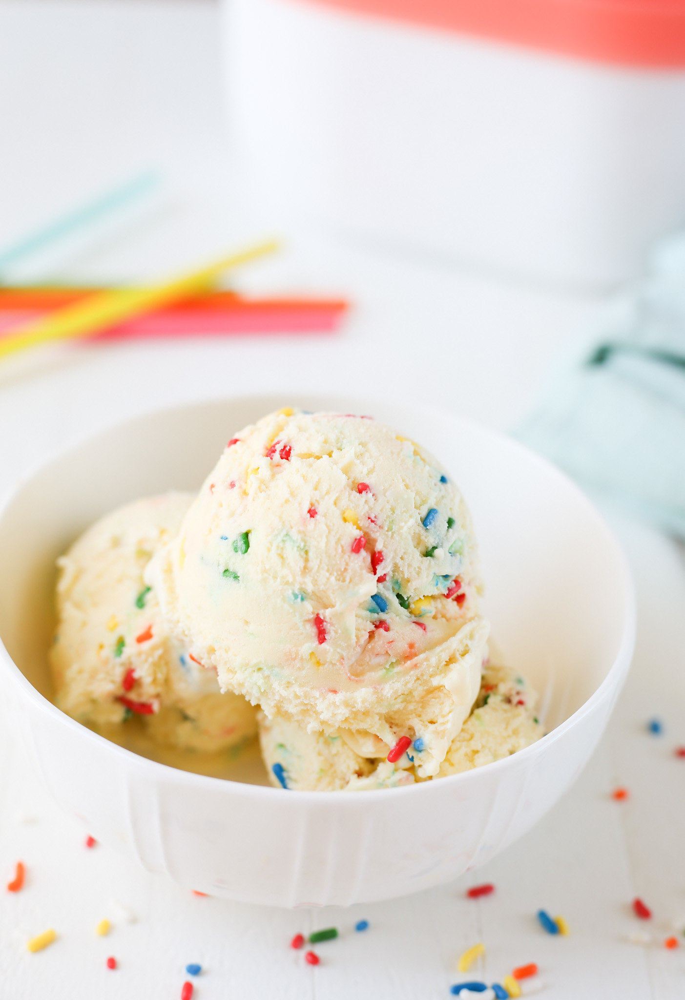

Birthday Cake Eis

Description
Birthday Cake Ice Cream is the most festive ice cream you’ll ever make! It’s so creamy and delicious and made with only a few simple ingredients.
Ingredients
- Whole milk
- Sugar
- Egg yolks
- Vanilla extract
- Whipping cream
- Yellow cake mix
- Sprinkles
How to make Birthday Cake Ice-Cream Cake
- Make custard. Whisk together milk, sugar, egg yolks, vanilla, cream, and cake mix.
- Cook custard. Cook over medium-low heat until mixture reaches 160 degrees F (70 degrees C), stirring frequently. Remove from heat and strain through a fine mesh strainer.
- Chill. Chill in the refrigerator or freezer until custard is cold.
- Freeze. Pour the chilled mixture into an ice cream maker and freeze according to manufacturer’s directions.
- Add sprinkles. Stir in sprinkles by hand and transfer ice cream to a freezer-safe container.
- Store. Cover and place in freezer for at least 2 hours before serving.